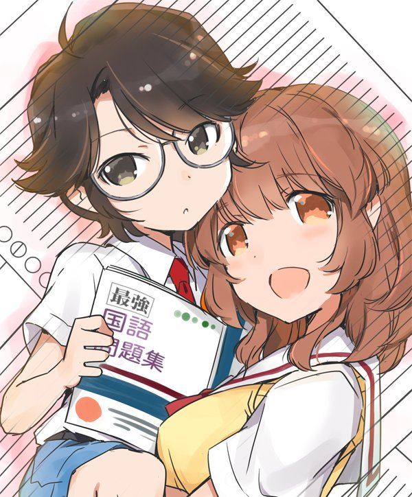
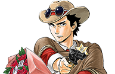

This week's Weekly Shonen Sunday posting order & comments from the author.

Question of the week
Was there anyone where you were like 'This person is a genius' at first glance?"
Shinri to Mako-neechan(OneShot) 

Wakaki here. It'll soon be summer huh? Please be enchanted by the scene of elementary school students eating ice cream.
Ponkotsu-chan Kenshochuu

When I read the 'Romance Dawn' oneshot, I immediately thought that Oda-sensei was a genius.
Aozakura Bouei daigakkou Monogatari

Makoto Ojiro who I met when I was a youngster.
Major 2nd

Shinichi Hoshi. (TN- A novelist and Sci-fi writer known for writing super short *3-4 pages* science fiction stories.)
Yuko sae tatakaeba

Tsuda-san of Daian!!
Detective Conan: Zero's Tea Time
Butt Detective.
MAO

Megumi's conversational abilities.
Amano Megumi wa suki darake!

I think people who can draw short manga on twitter while also having a serial at the same time are geniuses..
SWITCH

I feel that way when I watch those who can trace and draw serious sword fights from photos.
Komi-san wa komyusho desu

Ryouko Kui! (TN- Author of Delicious in dungeon.)
Kimi wa 008

There are so many....most of them I met while in my high school days.
Maiko-san chi no Makanai-san

Kaoru Mori (Author of "A Bride's story")
Be Blues!

The lyricist Takashi Matsumoto. (Who has written over 2,100 songs --130 of which have been the 10 ten in the oricon charts.)
Sokyuu no Ariadne
Man*Gatarou, Kousuke Masuta and Tobira Oda (TN- All three of them are gag manga authors.)
Tonikaku Cawaii

Wakaki (Tamaki) and Tanabe (Yellow) I guess...
Anonatsu 1959

Ayumi Ishii (TN- Author of Nobunaga Concerto in Gessan.)
Undine ha Kyou mo Koi wo suru ka?

It's only been recently but the morning drama "Gegege no Nyoubou" has deeply moved me whenever I've sat down for a watch.
Daiku no Hato

Tamori (TN - A Japanese comedian/host.)
Maoujo de Oyasumi

This question is too difficult!! The bears in my house are all cute and smart!
Fire Rabbit!!

Maya Kitajima! (TN- A character from Suzue Miuchi's manga series "Glass mask".)
RYOKO
I feel this way about anyone who can gather mass quantities of things.
Tantei Xeno to Nanatsu no Satsujin Misshitsu

Katsuya Terada (TN- Probably best known for his artwork and designs featured in Blood the Last Vampire.)
Hoankan Evans no Uso ~Dead or Love~

I don't have the eyesight necessary to discern geniuses.
Chrono Magia: Infinity Gear

The pig tailed person I saw outside of college racing by on a skateboard.
Gofun go no Sekai

Conventional, but I'd go with Souta Fujii. (TN- A professional Shogi player.)
Youkai Giga

Fire Fighters. (TN- The term Satou uses specifically refers to an archaic kind of fire fighter from Edo.)
Tokaichi Hitoribocchi

Mao Asada and Kazunobu Mineta. (TN- a figure skater and a singer/songwriter respectively.)
Souboutei Kowasubeshi
Kazuhiro Fujita
Oh of course there are! Though there are so many of them that it annoys me to think of them.